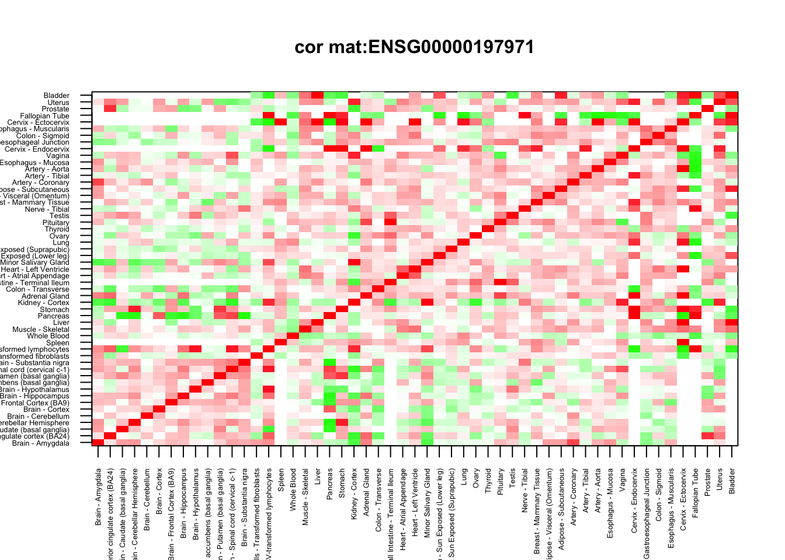
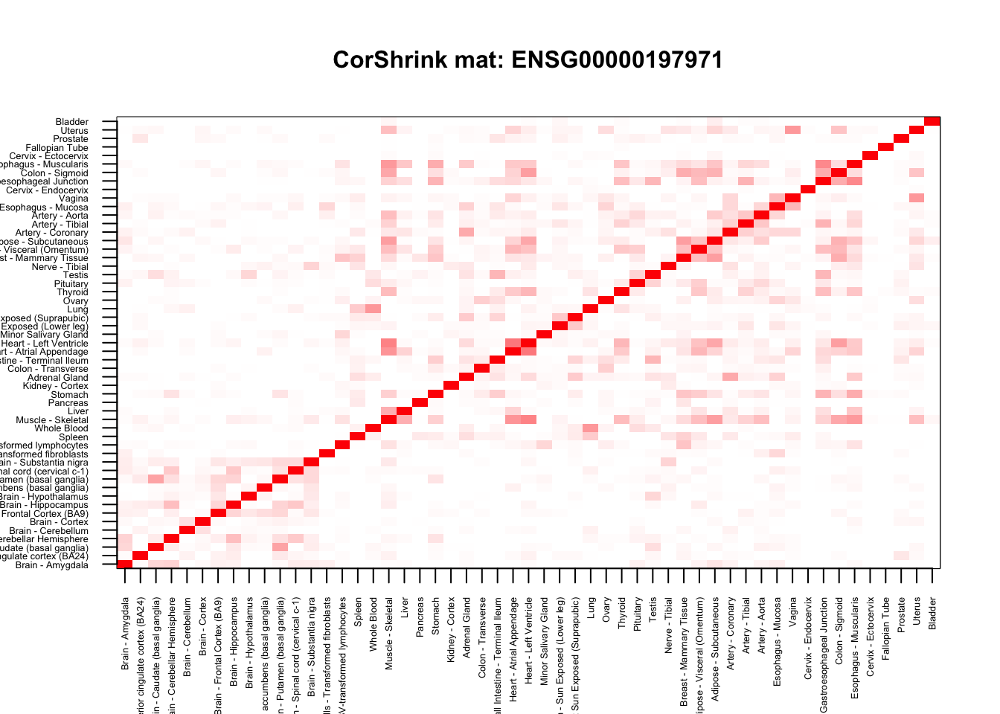
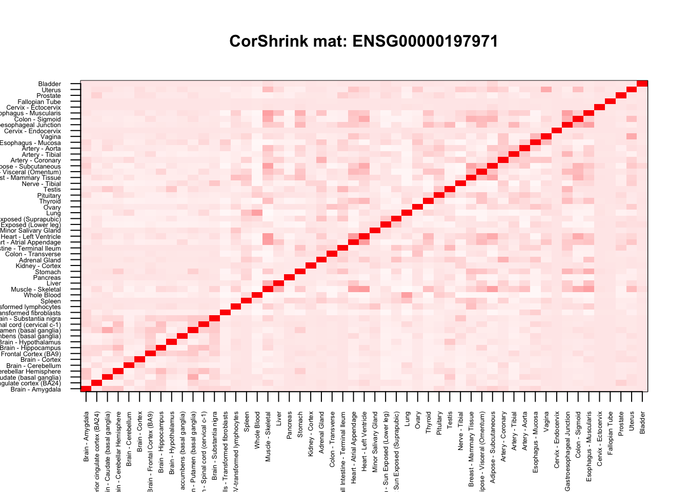

This is the start of the GTEx analysis using CorShrink. Here we pick up one gene and use look at the Corshrink estimation of the tissue-tissue correlation for that single gene. This script can be used as a model script to check the Corshrink function as well when under development.
name <- "ENSG00000197971"cor_data <- get(load("../output/cor_tissues_non_ash_voom_pearson.rda"))gene_names <- as.character(read.table(file = "../data/GTEX_V6/gene_names_GTEX_V6.txt")[,1])
gene_names_1 <- as.character(sapply(gene_names, function(x) return(strsplit(x, "[.]")[[1]][1])))
person_label=read.table("../data/GTEX_V6/person_identifier_labels_with_numbers.txt");
samples_id <- read.table(file = "../data/GTEX_V6/samples_id.txt")[,1]
samples_person <- sapply(samples_id, function(x) return(paste0(strsplit(as.character(x), "-")[[1]][1:2], collapse ="-")))
tissue_labels <- read.table(file = "../data/GTEX_V6/samples_id.txt")[,3]
unique_persons <- unique(samples_person)
unique_tissues <- unique(tissue_labels)Now we apply CorShrink on this data.
numg <- grep(name, gene_names_1)
cor_mat <- diag(1,53)+cor_data[,,numg]
common_samples <- get(load("../output/common_samples.rda"))
system.time(cor_sample_ML <- CorShrink::CorShrinkML(cor_mat, common_samples, sd_boot = FALSE,
ash.control = list(mixcompdist = "normal",
nullweight = 100)))## ash cor only and ash cor PD matrices are different## user system elapsed
## 0.232 0.067 0.303col=c(rev(rgb(seq(1,0,length=1000),1,seq(1,0,length=1000))),
rgb(1,seq(1,0,length=1000),seq(1,0,length=1000)))
image(as.matrix(cor_mat)[order_index, order_index],
col=col, main=paste0("cor mat:", name), cex.main=1,
xaxt = "n", yaxt = "n", zlim=c(-1,1))
axis(1, at = seq(0, 1, length.out = ncol(cor_mat)), labels = U[order_index], las=2, cex.axis = 0.4)
axis(2, at = seq(0, 1, length.out = ncol(cor_mat)), labels = U[order_index], las=2, cex.axis = 0.4)
col=c(rev(rgb(seq(1,0,length=1000),1,seq(1,0,length=1000))),
rgb(1,seq(1,0,length=1000),seq(1,0,length=1000)))
image(as.matrix(cor_sample_ML$ash_cor_only)[order_index, order_index],
col=col, main=paste0("CorShrink mat: ", name), cex.main=1,
xaxt = "n", yaxt = "n", zlim=c(-1,1))
axis(1, at = seq(0, 1, length.out = ncol(cor_mat)), labels = U[order_index], las=2, cex.axis = 0.4)
axis(2, at = seq(0, 1, length.out = ncol(cor_mat)), labels = U[order_index], las=2, cex.axis = 0.4)
numg <- grep(name, gene_names_1)
cor_mat <- diag(1,53)+cor_data[,,numg]
common_samples <- get(load("../output/common_samples.rda"))
system.time(cor_sample_ML <- CorShrink::CorShrinkML(cor_mat, common_samples, sd_boot = FALSE,
ash.control = list(mixcompdist = "halfuniform",
nullweight = 100)))## ash cor only and ash cor PD matrices are different## user system elapsed
## 0.881 0.508 1.370col=c(rev(rgb(seq(1,0,length=1000),1,seq(1,0,length=1000))),
rgb(1,seq(1,0,length=1000),seq(1,0,length=1000)))
image(as.matrix(cor_sample_ML$ash_cor_only)[order_index, order_index],
col=col, main=paste0("CorShrink mat: ", name), cex.main=1,
xaxt = "n", yaxt = "n", zlim=c(-1,1))
axis(1, at = seq(0, 1, length.out = ncol(cor_mat)), labels = U[order_index], las=2, cex.axis = 0.4)
axis(2, at = seq(0, 1, length.out = ncol(cor_mat)), labels = U[order_index], las=2, cex.axis = 0.4)
This R Markdown site was created with workflowr